Built on the saas-launch-video skill. It follows the skill’s arc and pacing (a cut every 1.6–3 s) and ghost.org’s branding: Inter Bold headlines with tight tracking, ink #15171A, the white-and-black ground you approved, Ghost purple for line 2, a black primary button, and the real Ghost editor and orb.
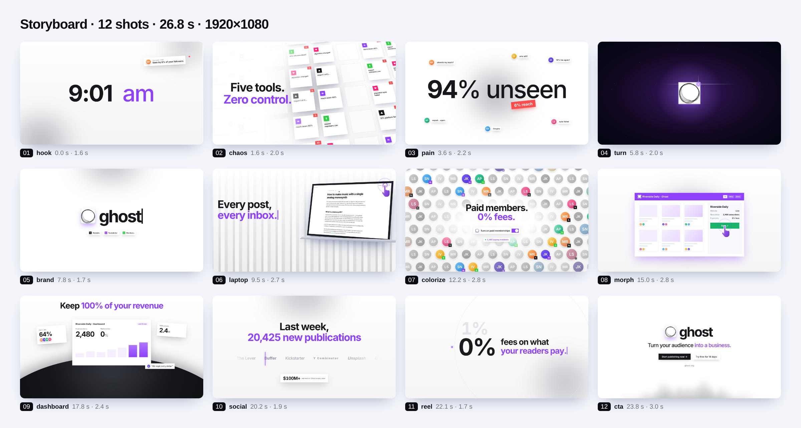
| # | Start | Shot | On-screen copy | What moves |
|---|---|---|---|---|
| 01 | 0.0s | hook | 9:00 → 9:01 am · “Seen by 6% of your followers” | The clock focus-pulls in, the minute digit rolls and a notification flies in with a red dot. |
| 02 | 1.6s | chaos | Five tools. / Zero control. | A tilted 3D wall of tool alerts pops in with red badges (“payment sync failed”, “10% platform fee”, “export members.csv”), and the headline blur-whips in. |
| 03 | 3.6s | pain | 94% unseen · red pill “6% reach” | The number counts up, the pill stamps on and complaint bubbles orbit, then it goes grey and dips to black. |
| 04 | 5.8s | turn | (dark) | A navy starfield. A light flare draws a ring, the ring becomes the Ghost orb, then a white flash. |
| 05 | 7.8s | brand | ghost · Website / Newsletter / Members | The orb lands and slides left, “ghost” types on and the three channel pills rise. |
| 06 | 9.5s | laptop | Every post, / every inbox. | The real Ghost editor (from ghost.org) swings in on a 3D laptop and the hand clicks Publish. Fixes problem 1: reach. |
| 07 | 12.2s | colorize | Paid members. / 0% fees. | A grey wall of readers. “Turn on paid memberships” toggles on and readers light up with badges. Fixes problem 2: fees. |
| 08 | 15.0s | morph | One place, / no duct tape. | The headline card morphs into a folder, then a Ghost panel (Website · Newsletter · Payments), and the hand clicks Publish & send. Fixes problem 3: tools. |
| 09 | 17.8s | dashboard | Keep 100% of your revenue | A Ghost-black horizon rises with the dashboard: 2,480 paid members, platform fee 10 → 0%, open rate 64%, MRR 2.4×. |
| 10 | 20.2s | social | Last week, / 20,425 new publications | The count-up runs, a marquee of publications featured on ghost.org scrolls past and “$100M+ earned on Ghost every year” appears. |
| 11 | 22.1s | reel | 0% · fees on what / your readers pay. | A slot reel rolls 10% → 0% and “fees on what your readers pay.” types on beside it. Same animation and timing, now self-explanatory. |
| 12 | 23.8s | cta | ghost · Turn your audience into a business. | The orb pops, the wordmark types, the black “Start publishing now →” button and “Try free for 14 days” rise, then ghost.org. |
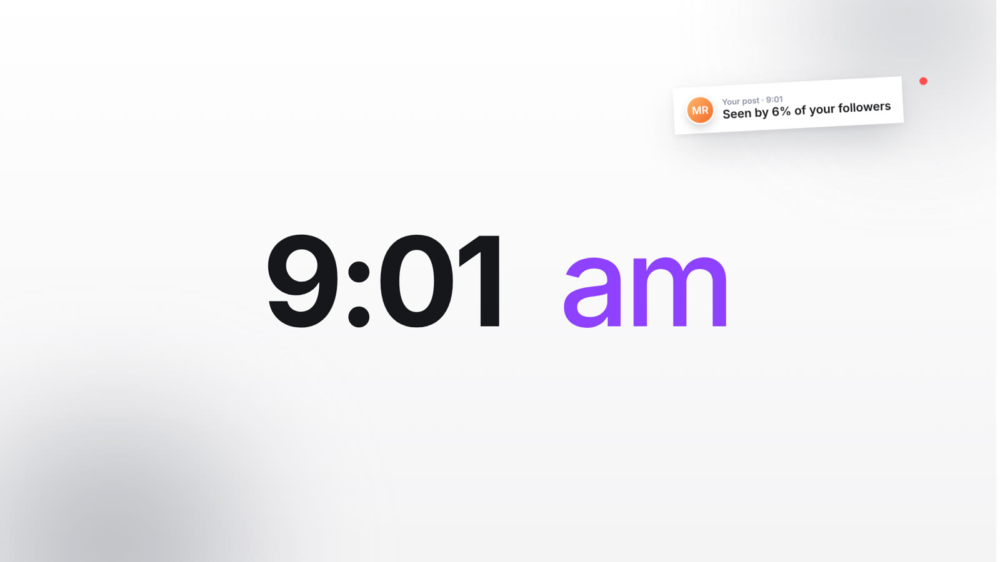
9:00 → 9:01 am · “Seen by 6% of your followers”
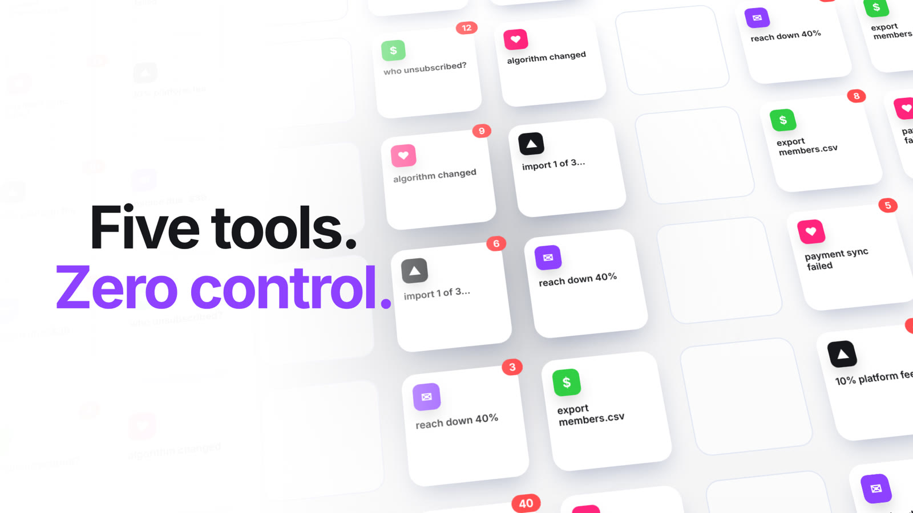
Five tools. / Zero control.
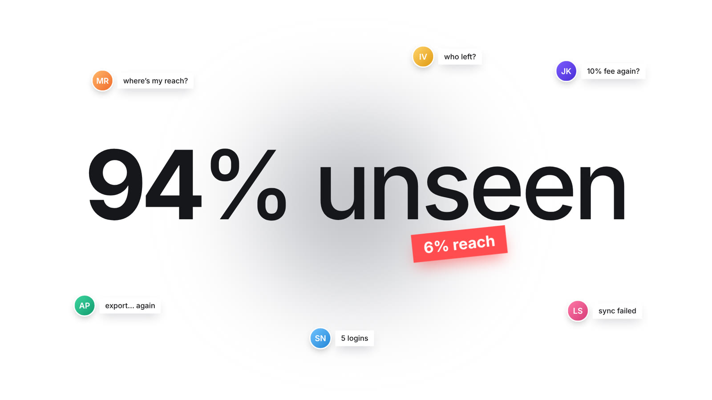
94% unseen · red pill “6% reach”
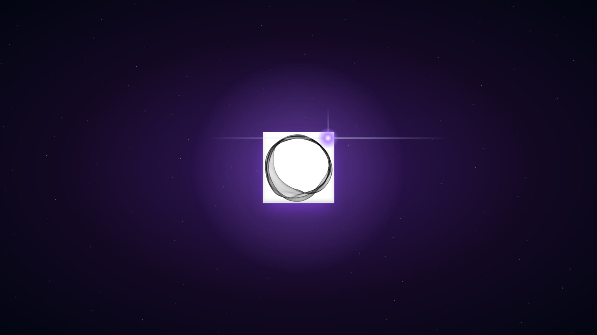
(dark)
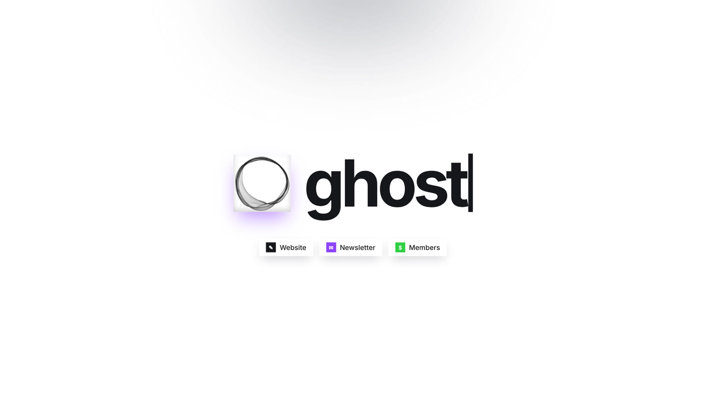
ghost · Website / Newsletter / Members
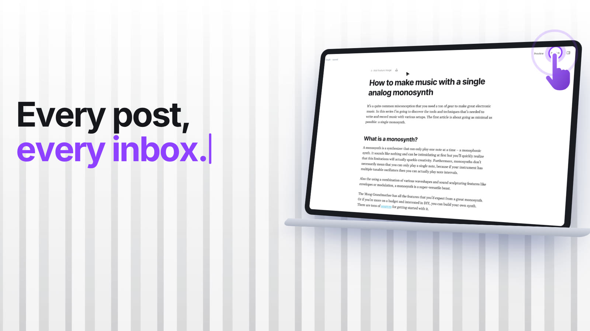
Every post, / every inbox.
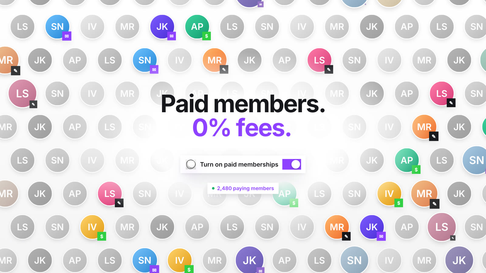
Paid members. / 0% fees.
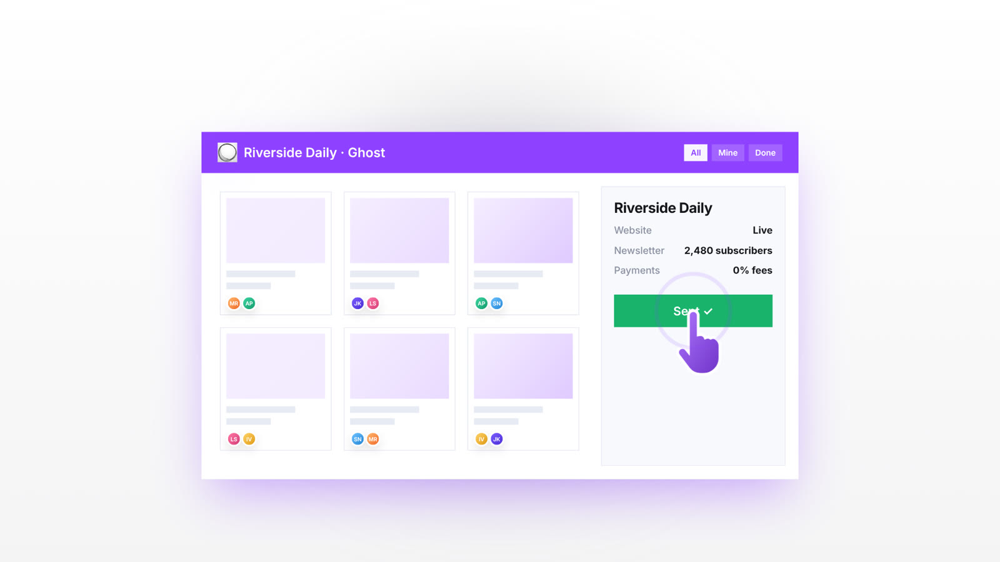
One place, / no duct tape.
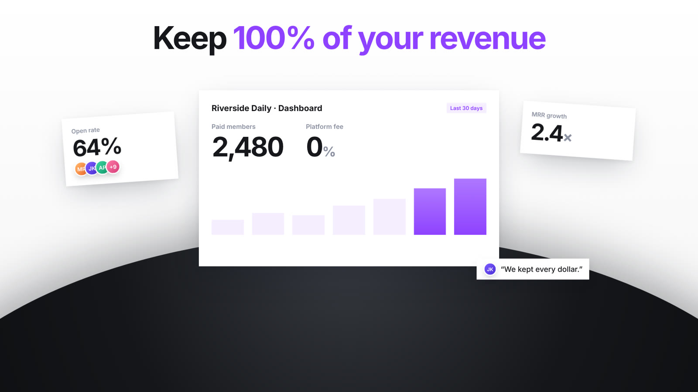
Keep 100% of your revenue
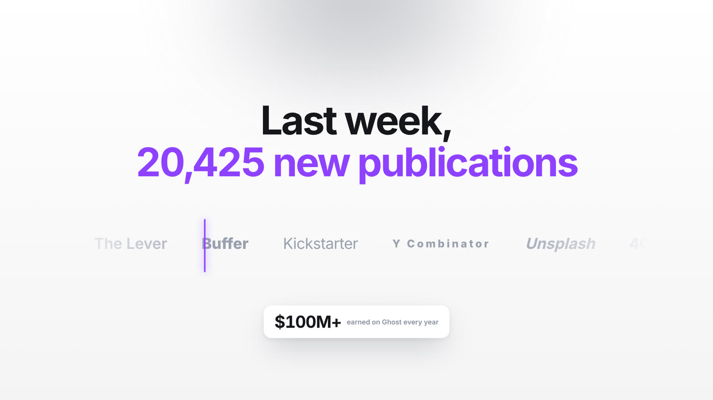
Last week, / 20,425 new publications
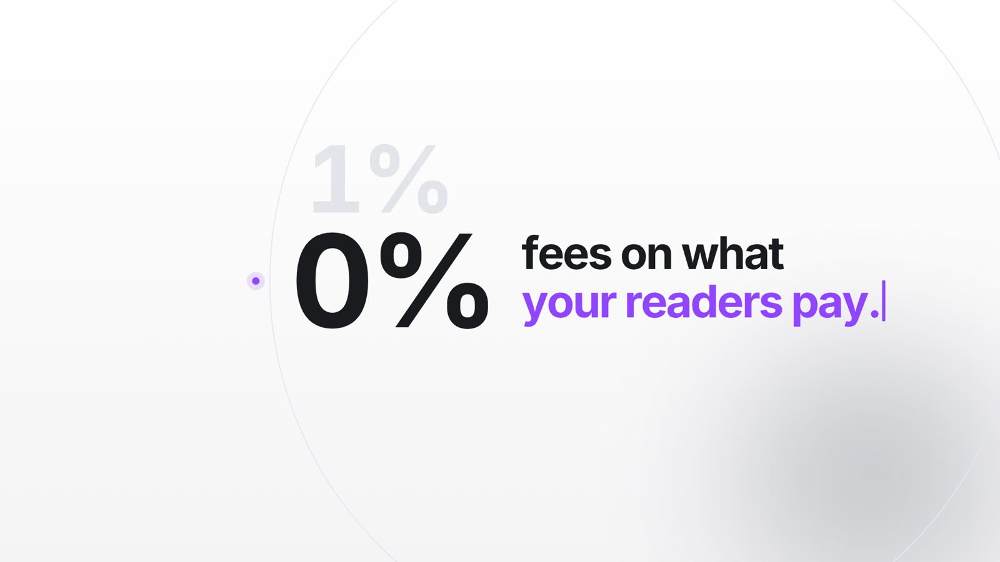
0% · fees on what / your readers pay.
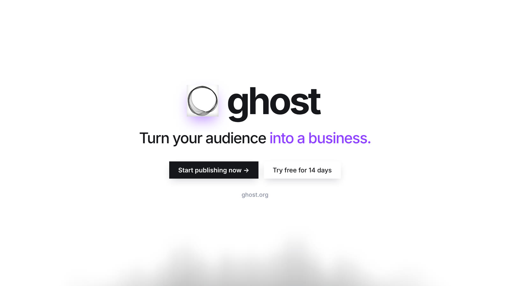
ghost · Turn your audience into a business.